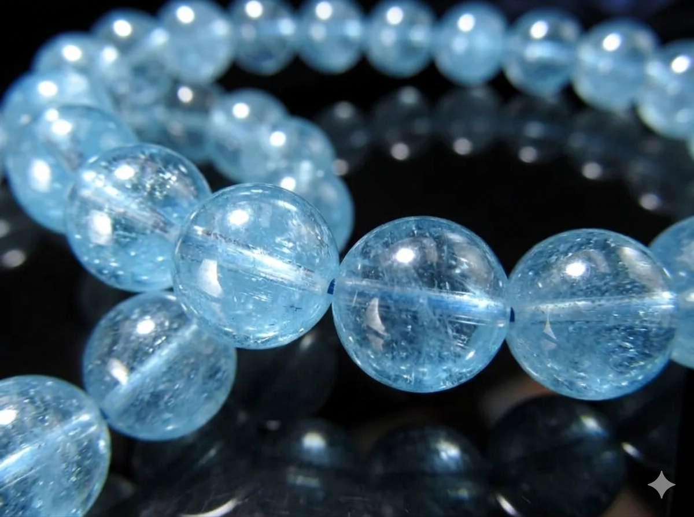
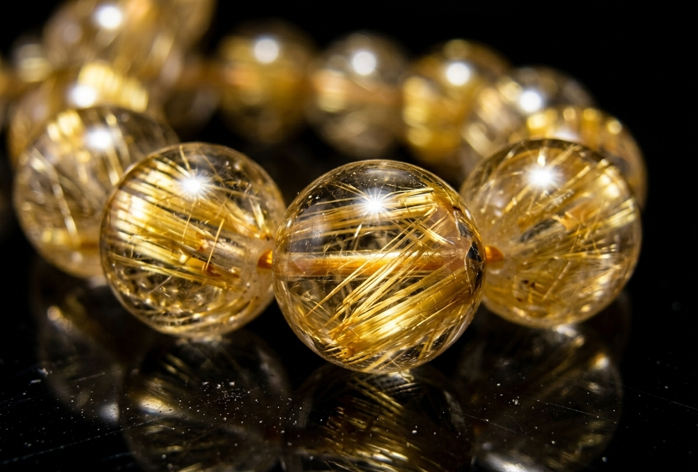
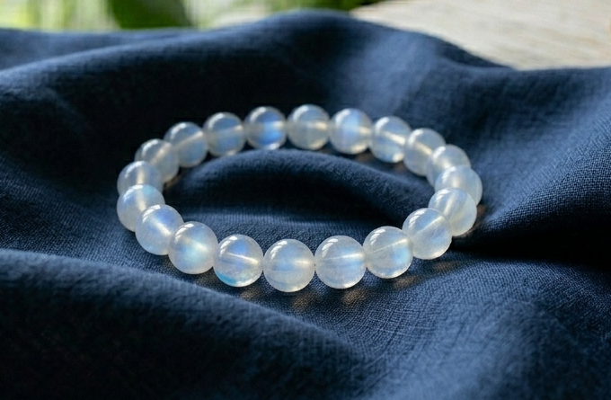
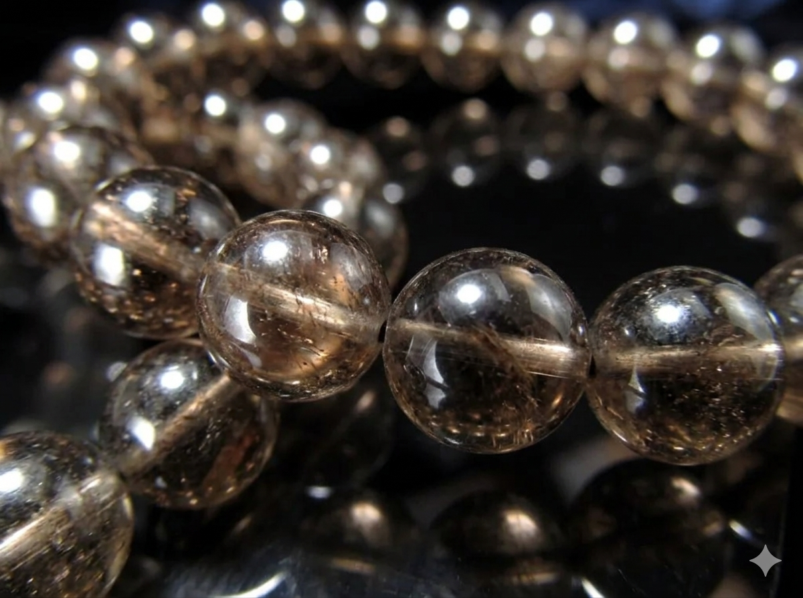
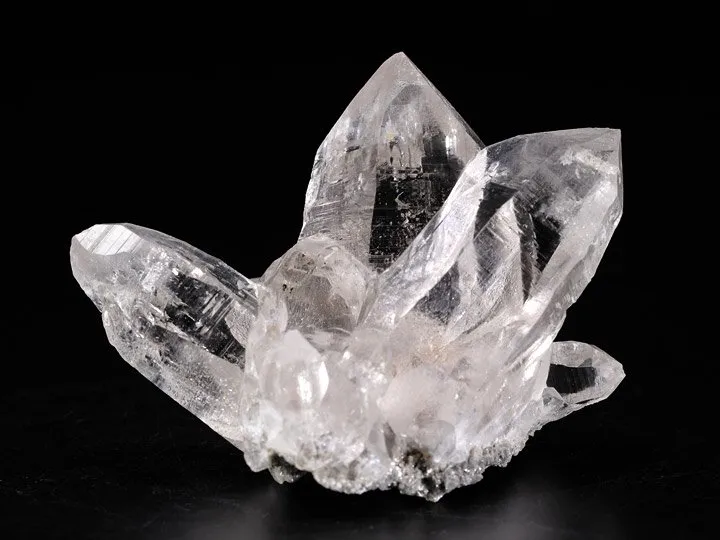

あなた専用のオーラ調整ガイド
詳細のご希望、
ありがとうございます。
結論から申し上げます。
ひろたか様、今のあなたには
水と金のオーラが足りていません。
そして、
木のオーラがやや強く出ています。
だから、
「夜になると、親友のLINEを
何度も開いてしまう」
「祈りが胸に溜まったまま、
どこにも流れていかない」
「待つべきか、区切るべきか、
自分では決めきれない」
そういう足踏みが
繰り返されてしまうんです。
でも、逆に言えば。
水と金を補い、木を鎮めれば、
全てが整い始めます。
ひろたか様専用のパワーストーンについて、
詳しくお伝えさせていただきますね。
パワーストーンは、
古来より五行のバランスを整え、
持つ人のオーラを
調和させる力がある
と言われています。
特に、知らせを待つ時間が
長く続いている時期や、
大切な人の無事を
祈り続けている時に、
石の持つエネルギーが
心の温度をそっと整え、
本来のあなたらしさを
引き出してくれます。
ひろたか様の場合、
水と金のオーラを補うことで、
祈りを穏やかに流し、
自分で区切りをつけながら
彼女を待つことができる
土台が作られます。
このオーラのアンバランスを
このまま放置すると、
何が起きるか。
2026年12月、
水と金のオーラが
同時に巡ってきても、
それを受け止める器が空いたままで、
せっかく流れ始めた感情が、
また胸の中で
行き場を失ってしまう。
そして届いた知らせに、
驚きと不安で胸がいっぱいになり、
「無事でよかった」の一言より先に、
問いかけばかりが溢れてしまう。
つまり、
せっかくの巡り合わせを、
受け取れないまま
通り過ぎてしまうんです。
でも誤解しないでください。
これは、
ひろたか様の祈りが足りないからではありません。
彼女の無事を、お金よりも自分よりも
先に想い続けてきたからこそ、
起きていること。
ただ、それを受け止める器
（水と金のオーラ）が、
今すくないまま
放置されているだけ。
パワーストーンは、
その足りない器を
ゆっくり満たしてくれます。
「待つしかない」と
祈りを握りしめるのではなく、
「今日の祈りはここまで」と
静かに区切れる自分に、
自然と変わっていく。
石を身につけることで、
ひろたか様本来の
大木のように根を張った
揺るがないオーラが戻り、
彼女にとって
安心して寄りかかれる存在に、
自然となっていきます。





パワーストーンが
体に馴染むまでには、
通常2〜3週間ほどかかります。
2026年12月が、
ひろたか様と彼女の運命が
最も近づく月。
ひろたか様に足りなかった
水と金のオーラが同時に巡り、
彼女にも止まっていた流れが動き出す、
数少ない交差点です。
そして2027年2月は、
会う流れが強まる月。
つまり、12月に連絡の糸が動き、
2月に会う流れが強まる。
これがこの冬から春への流れです。
ただ、この流れを
最高の状態で受け取るには、
12月を迎えるまでに、水と金のオーラを
整え終えていること。
これが、この冬で
最も大切な条件です。
今から整え始めれば、
12月に水と金のオーラが巡る頃には
石のエネルギーが
ひろたか様のオーラに馴染んでいます。
実は、
【運命を動かす】を選ばれる方が最も多く
全体の約70%を占めています。
「2026年12月の転機を、
本気で掴みたいから
中途半端にしたくない」
というお声が多いです。
・ご注文から7〜10日以内に発送
・追跡番号付き
・専用の浄化・エネルギーチャージ済み
「夜、親友のLINEを開きたくなった時、
手首の石に触れて深呼吸すると、
『今日の祈りはここまで』と思える」
「知らせが届いて胸がいっぱいになっても、
石を身につけていると、
『まず無事を喜ぼう』と
自然に思える」
石は、ひろたか様の
心の支えになってくれます。
会えていない人を
それでも信じて、
毎日、無事を祈り続けてこられた
ひろたか様の一途さ。
その想いは本物です。
だからこそ、
受け止める器を
今ここで整えてあげてください。
あとは、オーラを整えて、
2026年12月の転機を本気で迎えるだけ。
整ったひろたか様が12月、
届いた知らせを
大木のように静かに受け止めている場面。
「無事でいてくれて、よかった」
その言葉を
自然に伝えられる瞬間。
その未来への道を、
石が後ろからそっと
支えてくれます。
または、
「もう少し聞きたいことがある」
でも大丈夫です
ひろたか様と彼女の縁が、
自然に、穏やかに
動き始める瞬間を、
心から応援しております。
心からの愛と光を込めて。
かな